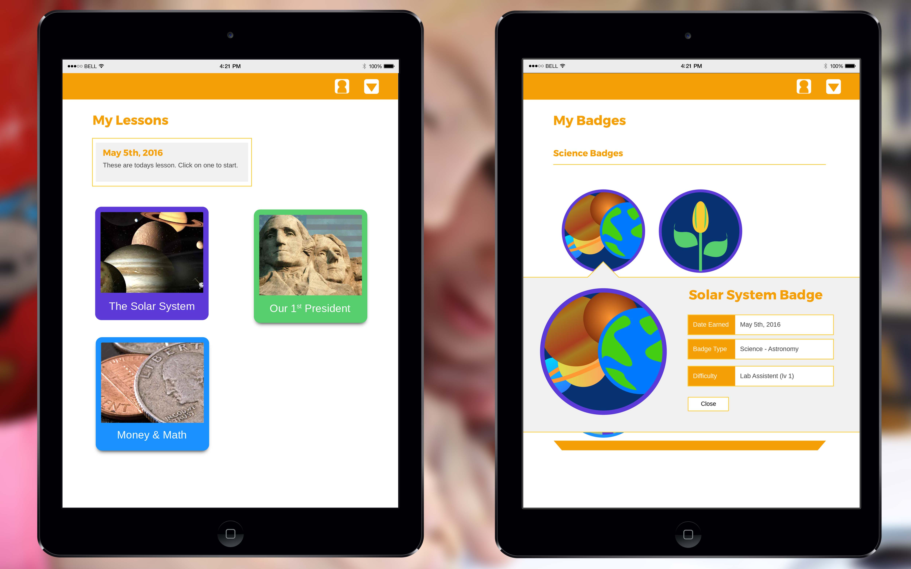

LevelUpLearning
LevelUpLearning is a solution to a problem. The problem is that some students (specifically elementary students in this case) just don't learn effectively in the traditional lecture style of teaching that most public schools offer. My solution is this: create an app that will coexist alongside lectures as a tool for teaching struggling students the same material through interaction and visual stimuli.
This project required a lot of research on my part, from looking up how curriculums are organized to seeing what subjects students in elementary school struggle the most with to the longevity and credibility of technology in the classroom (some of which I have researched in the past, specifically how useful games can be in education). My research led me to design an app that wouldn't be used instead of the typical classroom agenda, but alongside it, to further instill the teachings, as well as engage a student's interest to conduct further studies into subjects they found interesting.
You can view the app Live or on GitHub
Made using: Illustrator, Photoshop, HTML, CSS and Sass, jQuery, Jekyll
Wireframes
I wanted this app to be easy to easily digestible; the target audience was children, after all. I know I wanted a badge system, some way for users to have physical proof of accomplishment, and I wanted lessons to only appear when they were playable. As users completed lessons, they'd unlock new ones where they'd be able to show off more and more badges to family and friends.
Style Tiles


Even after doing research I wasn't sure if I wanted to focus on education or fun when designing the visual elements of this app. I went through a few different style tiles, choosing different themes and seeing what worked and what didn't. After conversing with my peers I decided to put emphasis on fun and adventure, ultimately landing with a golden yellow for my primary color and a system where each subject had its own corresponding color (Blue for history, green for math, etc).


{kind=link}